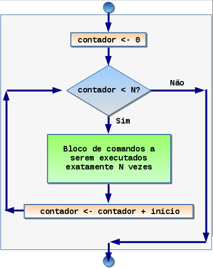

Comando Repita N vezes COMANDO1
Esse comando permite executar um conjunto de comandos um número fixo de vezes, dado pelo indicador N.
O N pode ser uma constante inteira ou uma variável inteira.
Esse comando é conhecido como comando de repetição tipo para
(ou for em linguagens de programação tradicionais).
Sintaxe
A sintaxe desse comanto em Portugol é:
repita_para i de 0 até n passo +1 {
BLOCO_DE_COMANDOS;
}
Vale observar que este comando equivale ao seguinte usando
repita_enquanto (vide diagrama de fluxo na fig. 1):
i <- 0;
repita_enquanto ( i < N ) {
BLOCO_DE_COMANDOS;
i <- i+1
}
Exemplo.
Dado n (a ser digitado pelo usuário), imprimir os n primeiros naturais.
programa {
funcao vazio inicio ( ) {
inteiro n <- 0
inteiro i <- 1
leia ( n )
repita_enquanto ( i < n ) {
escreva ( i )
i <- i+1
}
}
}
Exemplo Visual.
O exemplo de código visual no iVProg, na fig. 2, tem duas variáveis, n para o usuário digitar um
valor inteiro e o i para servir de contador.
O primeiro comando a ser executado é capturar uma leitura de dados. Vamos supor que usuário digite 5.
|
|
|  |
| Fig. 1. Diagrama de fluxo de execução do laço do tipo 'repita N vezes'. |
|
Assim, o bloco de repetição é executado 5: para i com o valor 0,
com o valor 1, com o valor 2, com o valor 3 e com o valor 4.
Portanto, serão impressos:
0
1
2
3
4.

Fig. 2. Exemplo de uso do comando repita N vezes.
O exemplo acima realiza uma iteração da variável i de 0 até n-1, sendo que
o valor na variável i pode ser utilizada para realizar operações de interesse (no
exemplo, imprimir os primeiros naturais).